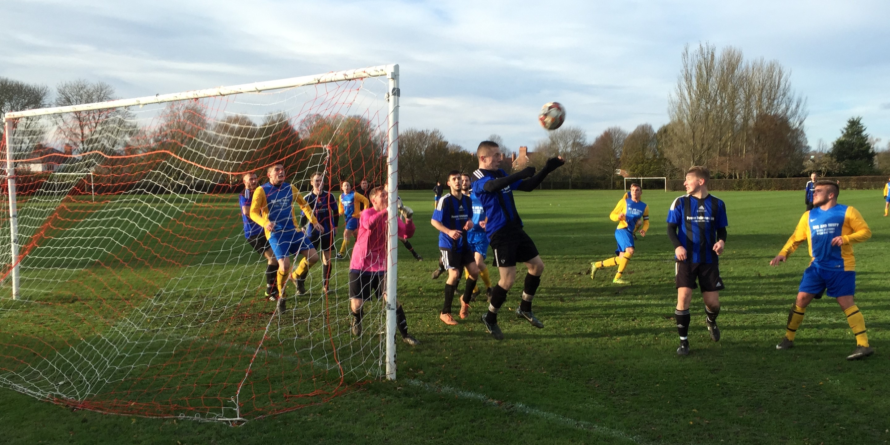
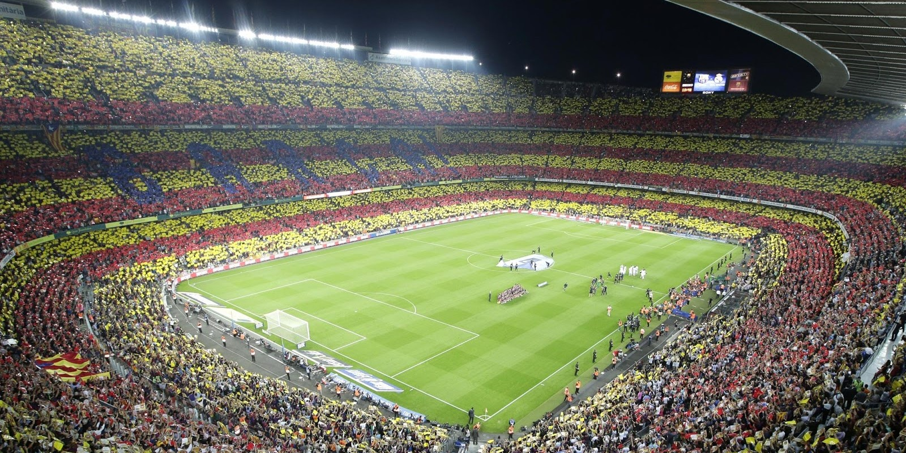

St. Peter's FC
Title description, Dec 7, 2017
I joined St. Peter's Footbal Club, in 2002, when I was 9 years old. I
couldn't play that well for the first few years and so I never really got
to play in matches with other teams, yet I stuck around. The friends I
made in the club made the sport much more enjoyable and they encouraged
me to greatly improve my skills.
In time, I made it to the A-team as a defender and won some championships
with the team. I continued to play with St. Peter's until the end of 6th year,
when I took time out to study.
Barcelona FC
Title description, Sep 2, 2017
My favourite football club has always been Barcelona FC. The club was founded in 1899 in Barcelona and has since become a huge symbol of the Catalan culture - its motto is "Més que un club", meaning "More than a club".